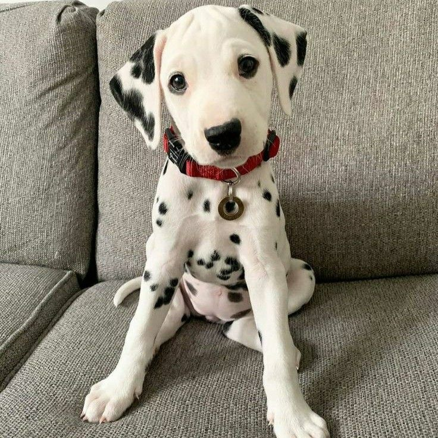

¿Un nuevo miembro en la familia?
|
Adoptar es un acto de amor que transforma dos vidas: la del animal que rescataste y la tuya. En Vínculo animal, te guiamos en cada paso del proceso para que encuentres a tu compañero ideal que llenará tu hogar de amor y alegría. ¿Cómo adoptar?
Requisitos básicos
|
Nuestra Historia
|
Vínculo animal nació en 2025 como una iniciativa impulsada por voluntarios comprometidos con el bienestar animal. Desde entonces, trabajamos con dedicación y amor, rescatando perritos, gatitos y otros compañeros peludos que han sido abandonados. Nuestro objetivo es brindarles una segunda oportunidad y ayudarles a encontrar hogares responsables donde reciban el cariño, la protección y el respeto que merecen. Nuestra misiónOfrecer una nueva oportunidad a cada vida rescatada, promoviendo la adopción responsable, el cuidado amoroso y el respeto incondicional por todos los animales. Buscamos construir un mundo donde cada mascota tenga un hogar seguro, digno y lleno de afecto. Nuestra visiónSer un referente nacional en protección y bienestar animal, construyendo un futuro donde cada mascota tenga un hogar digno, seguro y lleno de amor. Soñamos con una sociedad empática, donde la adopción sea siempre la primera opción.. |

|
Mascotas disponibles
|
 Luna Edad: 6 meses Tamaño: Pequeña Color: Blanca y negra Raza: Dálmata Descripción: Tranquila y cariñosa. |
 Felipe Edad: 2 años Tamaño: Mediano Color: Blanco y negro Raza: Husky siberiano Descripción: Alegre y juguetón. |
 Destructor de galaxias Edad: 4 años Tamaño: Pequeño Color: Café Raza: Chihuahua Descripción: Travieso y juguetón. |
 Princesa Edad: 2 años Tamaño: Grande Color: Café claro con blanco Raza: Pitbull Descripción: Tranquila y obediente. |